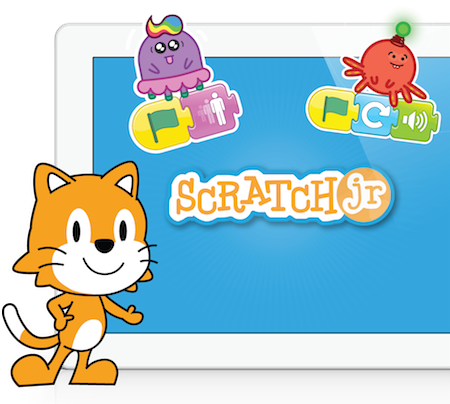
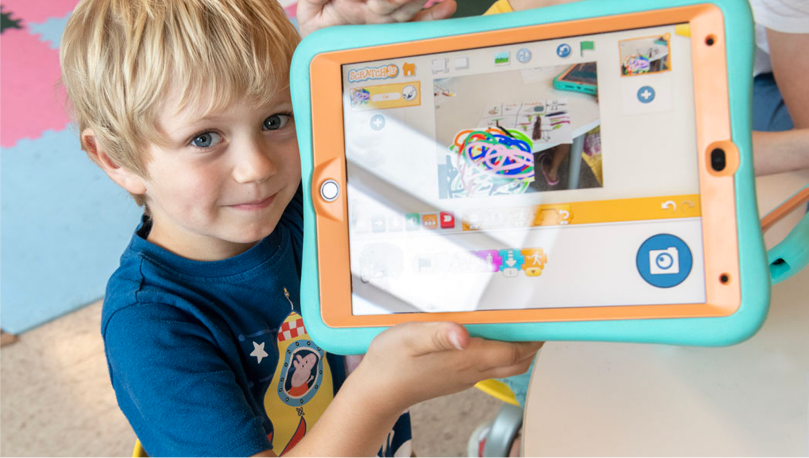

幼儿园的一节编程课，我在角落旁观了半小时
一个朋友把平板递到五岁女儿面前，说"来，拼个故事"。我凑过去看了半小时，然后自己回家也下了一个——ScratchJr，一款让学龄前孩子把想法变成能动的小故事的应用。
那天在幼儿园的开放日，我本来只是陪同事去接她五岁的女儿，结果被走廊里传出来的一阵"啵啵啵"声音勾住了脚。
顺着声音推开门，看见小朋友们围坐在几个蓝色垫子上，每人面前摆着一台平板，手指在屏幕上拖来拖去。正中间那个扎羊角辫的小姑娘仰起脸，对着平板喊了句什么，屏幕上一只橘色的小猫立刻跳到了一朵云上。老师在旁边笑着鼓掌，小姑娘自己也笑得前仰后合。
"这是什么？"我问同事。她凑过来告诉我，是幼儿园新开的编程兴趣班——不是真的写代码，用的是一款叫 ScratchJr 的应用。我当时以为这又是那种打着编程旗号给小孩玩的动画游戏，没太放在心上，直到同事把平板递到我手里让我试五分钟。
不是游戏，是把想法拼出来
拿到手的第一感觉是界面特别"空"。没有开始菜单、没有关卡选择、没有任何弹出的引导动画。中间一个舞台，左边一排彩色积木块，右边几个默认角色——一只小猫、一只兔子、几只小鸟。想让小猫动一下，就从积木区拖一块蓝色的"向前走"积木，再拖一块黄色的"跳"积木，拼在一起。点一下最下面那面小绿旗，小猫就真的走了两步然后跳起来。
就这么简单。简单到我三分钟就拼出了一个小猫从左边走到右边再叫一声的小动画。
但真正让我记住它的，是旁边那个小男孩。他花了大概二十分钟，给一只小鸟拼了一套脚本：向右飞、飞的时候叫两声、碰到屏幕边缘就转身、碰到另一棵树上的小鸟就停住然后"啵"一声。我看他的过程——他不是在"玩"，他嘴里在嘀咕，说的是"小鸟要去那边找它朋友，路上要叫，不然朋友听不到"。他把积木拼错的时候会皱眉头，把积木拖回原位重来，直到小鸟的轨迹和他脑子里想的那个故事对上。

它给五岁孩子准备的积木，其实只有七类
回到家我就从官方下载了一个。装完才发现，整个应用里的积木加起来也就三四十块，分成七种颜色——蓝色是动作，黄色是触发，绿色是声音，红色是外观，绿色的另一组是画笔，紫色是控制。每块积木就是一个图标，没有文字，因为设计的时候就考虑到使用者可能还不识字。
后来去ScratchJr官网翻了一下资料，确认这款应用出自 MIT 媒体实验室的"终身幼儿园"研究组——就是那个做了著名的 Scratch 青少年编程平台的团队。Scratch 面向八岁以上能读文字的孩子，ScratchJr 则是专门给还不认字的小朋友做的：把所有积木换成图标，把编程概念砍到只剩最核心的两件事——顺序和重复。
"顺序"就是积木拖下来的先后顺序。想让小猫先跳再走，就得把"跳"积木放在"向前走"上面，点绿旗它就会按顺序执行。"重复"则是控制积木里的循环——想让小猫走十步再跳，拖一块重复积木套住前面的动作积木就行。这两件事，就是所有编程的底层逻辑。
我用示例项目拆了一晚上
它内置了八个示例项目，从首页蓝色加号里就能打开。我那天晚上就从第一个开始玩：一个小猫在森林里追着蝴蝶跑的小动画。玩了五分钟，我点开编辑器想看看它的脚本是怎么拼的——原来就是一堆动作积木，按顺序堆上去，中间插了几块声音积木。
再打开第二个示例，是一个多页故事。角色从第一页走到第二页，用的是"翻页"积木——这个积木在屏幕上就是一个翻书的图标，五岁孩子也能看懂。第三个示例是对话，小猫头上会冒出气泡，里面写着一句话。后来去scratchjr文档翻了一下才知道，这些声音里还有录音功能——给角色录一段话，然后拼进脚本里，角色走到某个位置就自动播放你录的声音。
我自己也试着用录音做了个小项目：小猫走到屏幕中间，停下来，"啵"一声，然后播放我录的一句"你好呀"。朋友看了说，这不就是她女儿在幼儿园做的那个吗——把自己的声音配进去，小孩特别有成就感。
家长其实有三个省心的地方
陪孩子用了几次之后，同事跟我说了三个让她放心的点。
第一，不用注册。装好直接打开就能玩，没有账号、没有登录、没有任何收集信息的环节。这让做家长的松了一口气——毕竟给五岁孩子用的应用，账号体系本身就是一个风险点。
第二，没有广告也没有内购。整个应用从首页到编辑器，没有任何弹出的广告位，也没有充值入口。它是 Scratch 基金会运营的，不靠商业化变现，这一点在儿童应用里确实少见。
第三，数据都在本地。项目文件、录音、用平板相机拍的照片，全部只存在这台设备上。拔掉网络也能用，分享的时候是手动导出 .sjr 文件。同事说，这三点加起来，她给孩子装的时候基本没犹豫。
也有一个小提醒：分享之前大人过一眼
唯一需要家长主动把关的地方，同事告诉我，是分享。因为项目文件里可能包含录音和相机拍的照片——比如孩子录了自己的声音，或者用相机拍了自己的脸做成角色。如果把这个项目文件发给老师或者其他家长群，里面的录音和照片也会一起发出去。她的做法是，孩子每次要分享作品之前，她先打开项目过一遍，看看里面有没有需要注意的内容。
那个羊角辫小姑娘后来做了什么
上周我又去幼儿园接同事女儿的时候，顺便看了下那个羊角辫小姑娘的平板。她在做一个多页故事：第一页小猫在窝里睡觉，第二页小猫醒来出门，第三页小猫追上了一只小鱼，第四页小猫回家把鱼分给了朋友。每一页都有小猫移动的动作积木，还有好几块"弹出音"——每到一个关键节点就"啵"一声。
老师说，这些项目孩子自己想的，她只是偶尔帮着调整一下积木的顺序。羊角辫小姑娘告诉我，她打算明天再加一个"小猫遇到了一只兔子"的新页面，还想给兔子录一段自己编的台词。
我站在旁边，突然觉得这比我见过的很多所谓"少儿编程课"都实在。它没有教孩子写变量、循环、函数这些名词——它只是让孩子把脑子里那个"小猫要做什么"的想法，一块积木一块积木地拼出来。拼的过程里，孩子自然就懂了什么是顺序、什么是重复、什么是触发。这些东西，是写在积木里的，不是写在课本里的。
这款应用的设计，确实是从研究机构出来的。没有会员体系、没有每日打卡、没有排行榜，它连"家长门"的入口都藏得很深——只有大人长按某个角落才能打开。它的目标很朴素：让学龄前的孩子，把想法变成能看的作品。这大概也是为什么，这个基金会能把一款应用从研究室带到全球一百九十多个国家，累计了七千万活跃用户。
如果你身边也有学龄前的孩子，或者自己想把"编程入门"这回事从"写代码"的恐惧里解放出来，可以去它的官网看看。安装包从官方下载就行，装好断网也能用。它不是那种学完就能找工作的编程工具，但它能让一个五岁的孩子，第一次把脑子里的故事，变成能动的画面。
